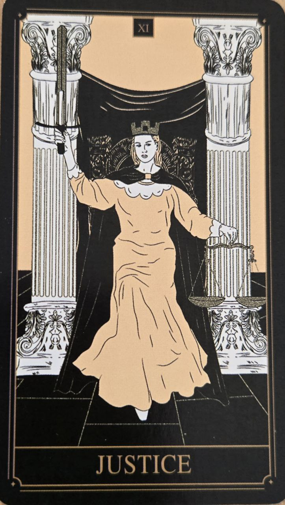

Spravodlivosť je kartou rovnováhy, pravdy a zodpovednosti. Predstavuje potrebu pozrieť sa na situáciu objektívne a bez skreslenia.
Táto karta zdôrazňuje význam čestnosti voči sebe aj ostatným.
Karta symbolizuje spravodlivé rozhodnutia, dôsledky činov a schopnosť prevziať zodpovednosť za svoje voľby.
Naznačuje obdobie, keď je potrebné zvážiť všetky fakty a konať rozumne.
Postava na karte drží váhy a meč. Váhy predstavujú rovnováhu a objektivitu, zatiaľ čo meč symbolizuje pravdu a jasné rozhodnutie.
Symetria obrazu zdôrazňuje poriadok a nestrannosť.
Spravodlivosť nie je kartou odmeny alebo trestu. Skôr pripomína, že každé rozhodnutie prináša svoje prirodzené následky.